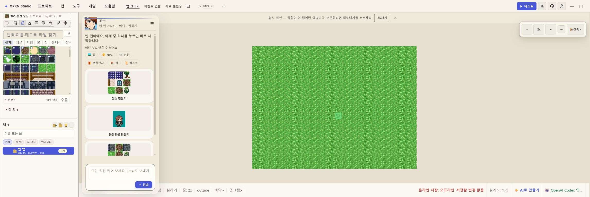
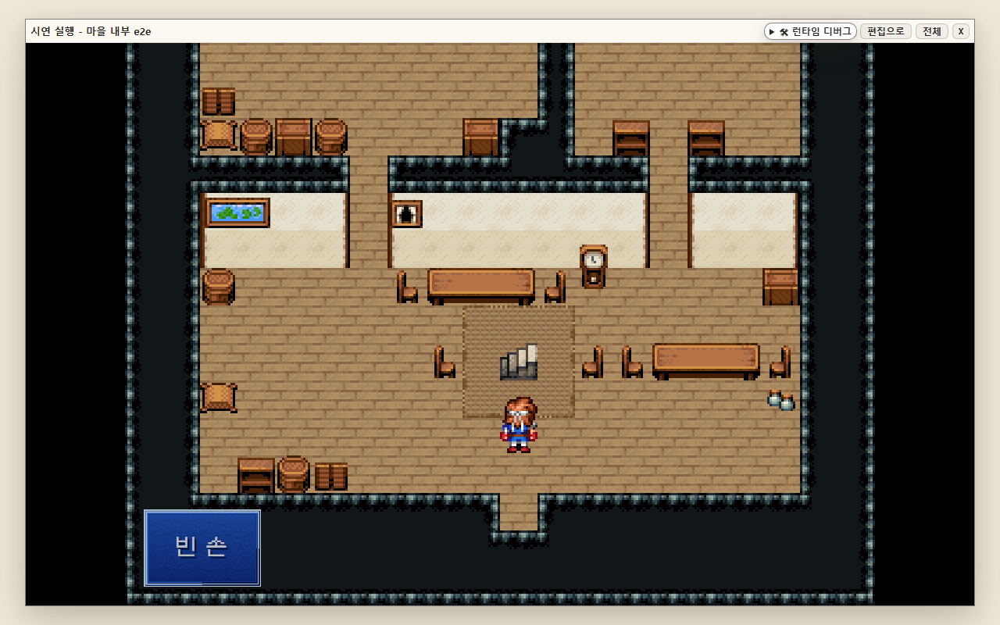
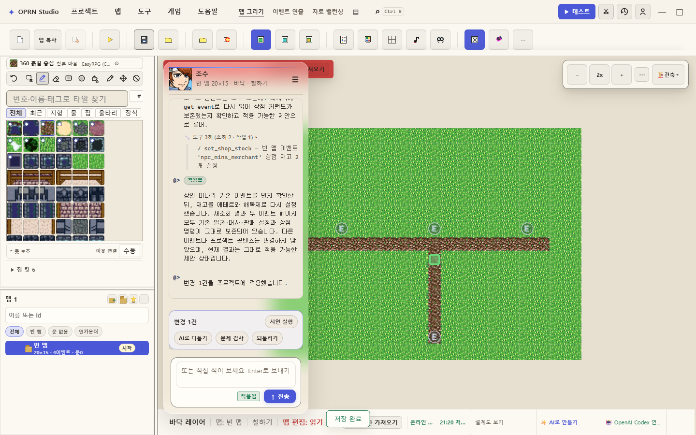
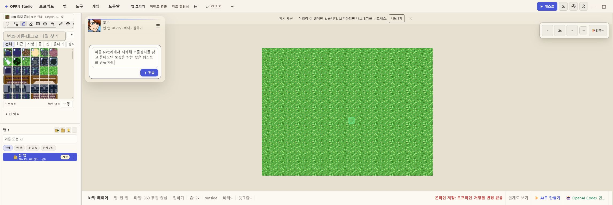
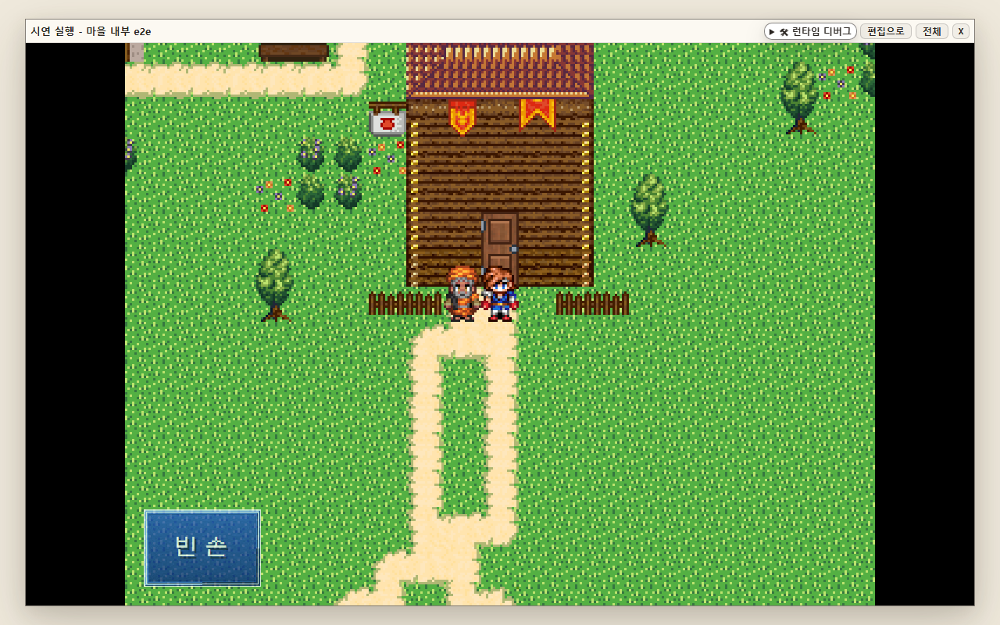
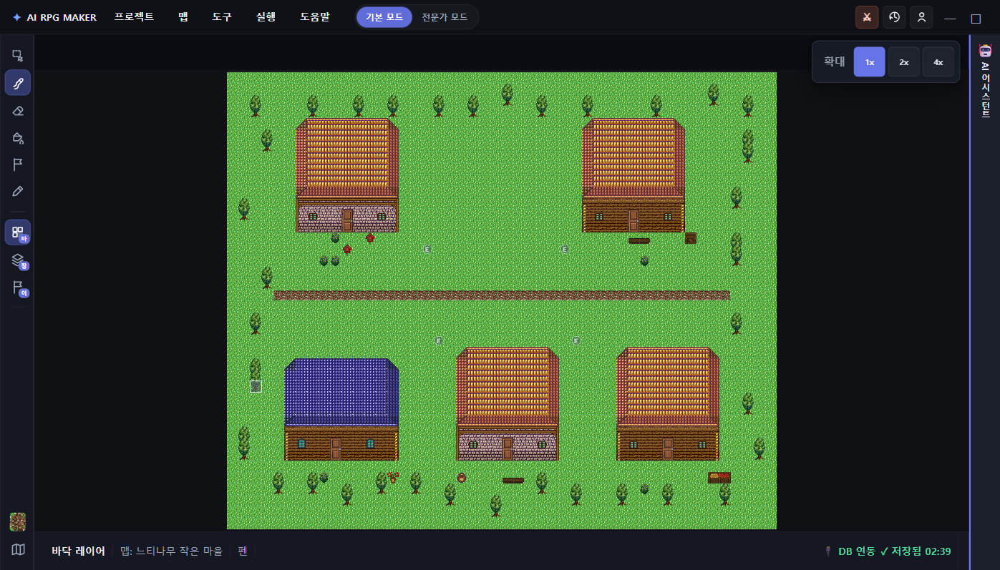
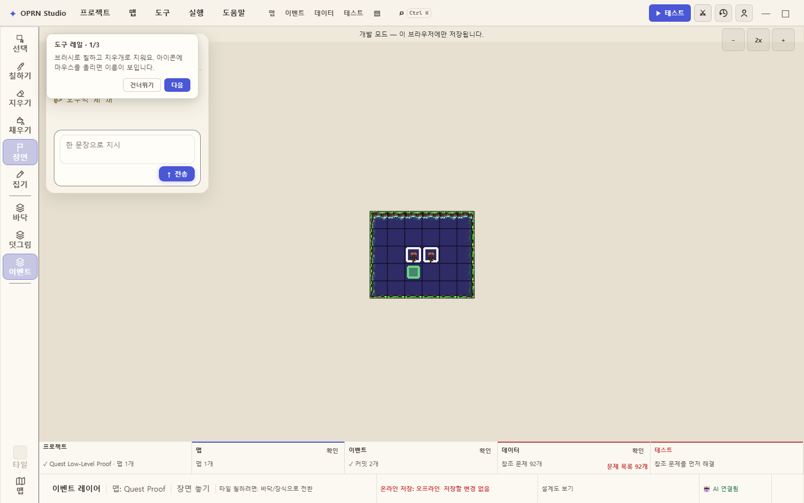
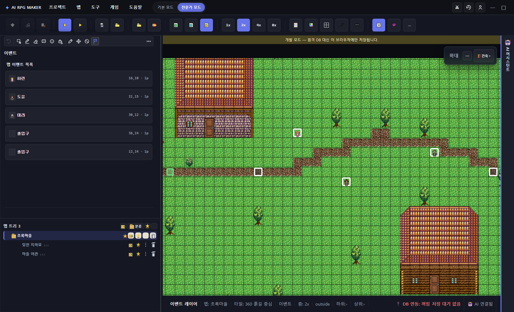
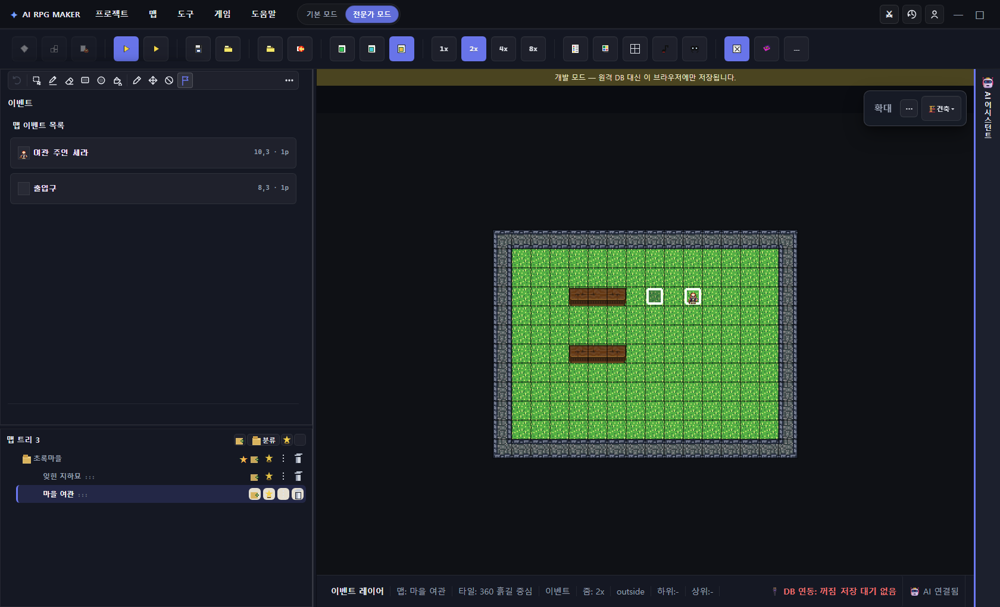

집을 만들 수 있나?
외관은 확실히 가능. 출입형은 고수준 경로에서 가능.
author_house 실제 호출 2/2 성공. 새 E2E에서 마을 집의 문을 열고 내부로 이동한 뒤 다시 마을로 복귀했다.
- 외관·여러 필지·마당·도로 충돌 방지
- 양방향 전송 이벤트와 내부 맵 생성
- 직접 내부방 파이프라인의 ‘입구’ 이벤트 회귀 2건
하지만 기능 목록과 실제 완주율은 다르다. 집·퀘스트·맵 꾸미기를 대상으로 168개 도구 카탈로그, 194개 집중 테스트, 실제 AI 활동 로그, 플레이 왕복, Supabase 재로드를 함께 조사했다.

현재 에디터 · AI 진입 화면
신규 E2E · 집 내부 진입 성공“도구가 있다”를 가능 판정으로 쓰지 않았다. 실제 호출, 구조 테스트, 플레이, 저장 후 재로드 중 무엇까지 통과했는지를 카드마다 표시했다.
외관은 확실히 가능. 출입형은 고수준 경로에서 가능.
author_house 실제 호출 2/2 성공. 새 E2E에서 마을 집의 문을 열고 내부로 이동한 뒤 다시 마을로 복귀했다.
엔진은 된다. 현재 채팅 원샷 완주는 불안정하다.
그래프, 플래그, 분기, 워크스루, 도달성 검증은 41/42 테스트를 통과했다. 그러나 실제 자유문장 요청은 수리 재시도를 거쳤고 저장되지 않았다.
구조화된 마을·길·배치에는 강하다.
author_village는 2채 마을과 100×100 도시를 seed 기반으로 재현하고, 길·물·수목·NPC·상점·상자를 함께 다룬다.
실무적으로는 “한 문장 만능 생성기”가 아니라 “RPG 편집 도구를 호출하는 AI 감독”에 가깝다. 고수준 façade(author_house, author_village, author_story_arc)로 초안을 만들고, lint·walkthrough·플레이·원격 재로드로 닫을 때 가장 잘 작동한다.
이미지를 누르면 원본 크기로 볼 수 있다. 성공 화면뿐 아니라 실패 화면도 같은 무게로 포함했다.

실제 적용 + Supabase 저장
현재 UI
신규 E2E · 2026-08-24 신규 E2E · 통과
신규 E2E · 통과

기존 생성 산출물
실패 증거 · 90초 타임아웃 엔진 파생 근거
엔진 파생 근거
아래로 갈수록 실제 사용자 결과에 가깝다. 카탈로그만 존재하고 호출·플레이 근거가 없는 기능은 “미실측”으로 낮췄다.
코드가 말하는 가능성과 저장된 게임이 보여주는 사실을 분리했다.
이 수치는 전체 제품 점수가 아니라, 질문과 직접 관련된 선택 테스트의 결과다.
필터로 판정별 기능을 볼 수 있다. “구현됨·미실측”은 도구/테스트가 있으나 이번 감사에서 실제 저장본까지 완주하지 않은 영역이다.
| 영역 | 판정 | 가능한 작업 | 근거와 한계 |
|---|---|---|---|
| 길·지형·소품 | 실전 검증 | 도로 칠하기, 영역 채우기, 호수·길·울타리·소품 배치, 경계/충돌 검사 | paint_road 실제 4/4 성공. 원격 저장본 22 autotile 셀 재로드. |
| NPC·상점·상자 | 실전 검증 | NPC 배치·주민화·일정, 상점 재고, 보물상자, 이벤트 보존 수정 | 원격 저장본 NPC 4·상점 1·상자 1. 상자 상호작용 후 50G 및 self-switch 확인. |
| 집 외관·필지 | 실전 검증 | 단독 주택, 여러 필지, 문·창·지붕, 마당, 도로와의 간격 | author_house 실제 2/2. 관련 구조 테스트 대부분 통과. |
| 출입 가능한 집 내부 | 조건부 | 별도 내부 맵, 가구, 양방향 문 전송, 마을 복귀 | 고수준 build_village E2E 왕복 통과. 직접 내부방의 ‘입구’ 이벤트 회귀 2건. |
| 한 맵 마을/도시 | 실전 검증 | seed 기반 2채 마을, 8채 마을, 100×100 도시, 수목·도로·시설·인구 | author_village 정확성/재현성 테스트 통과. 실제 호출은 3성공/5실패 후 수리됨. |
| 퀘스트·스토리 아크 | 조건부 | 플래그, 선행조건, 보상, 분기, 연속 퀘스트, 엔딩, 워크스루 생성 | 그래프 엔진 41/42. 실제 채팅은 저수준 이벤트 수리 후에도 미저장, 저장본 quest-like 0. |
| 퀘스트 원샷 UI 완주 | 현재 빨간불 | 자유문장 한 번으로 NPC→목표→귀환→보상까지 자동 생성 | 신규 E2E가 quest-giver 이벤트를 기다리다 90초 타임아웃. 현 상태에서 무검수 사용 금지. |
| 조명·시간·날씨·NPC 일정 | 구현됨·미실측 | 조명 볼륨, 장면 무드, 시간 시스템, 이동 일정 | 도구와 테스트 존재. 원격 저장본의 시간 시스템은 확인했으나 복합 연출은 이번에 완주 미검증. |
| 멀티맵·월드 연결 | 구현됨·미실측 | 월드 계획, 지도 연결, 여관/마을 등 여러 맵 구성 | plan_world, link_maps, build_world와 기존 3맵 산출물 존재. 신규 원격 완주 미실측. |
| 전투·몬스터·퍼즐·함정 | 구현됨·미실측 | 적/부대/전투 이벤트, 퍼즐 컴파일, 함정, 전투/장면 테스트 | 도구 카탈로그와 전용 테스트가 존재하지만 이번 질문 범위에서는 라이브 저장본을 새로 만들지 않음. |
| 데이터베이스·이벤트 편집 | 구현됨·미실측 | 이벤트 페이지/명령, 공통 이벤트, 데이터 엔트리 조회·수정 | 세밀한 저수준 도구는 강력하지만 인자 오류가 실제 로그에서 발생. 고수준 façade 우선 권장. |
| 자동 품질 평가 | 조건부 | lint, 구조적 배치 검증, 도달성, walkthrough, 맵 영역 재확인 | run_lint 실제 39/39, evaluate_game_quality 24/24. 재미·독창성·회화성은 평가하지 못함. |
사용자가 도구 이름을 반드시 알 필요는 없지만, 요청을 “생성 → 검증 → 플레이 → 저장 재로드” 단계로 나누면 실패를 발견하기 쉽다.
author_house 또는 마을 고수준 경로로 초안을 만든다.author_story_arc / define_quest로 목표·선행조건·보상을 구조화한다.lint_quest와 generate_walkthrough를 실행한다.verify_quest 및 run_scene_test로 시작부터 보상까지 재생한다.upsert_event 한 번에 맡기고 성공 메시지만 믿으면 안 된다.author_village로 큰 구조를 만든 뒤 길·물·식생·소품을 보강한다.show_map_region, run_lint, 구조 QA로 겹침과 막힘을 잡는다.로컬 활동 로그의 성공/실패 호출 수다. 같은 요청의 수리 재시도도 포함되므로 제품 전체 성공률로 해석하면 안 된다.
| 도구 | 성공 | 실패 | 읽을 점 |
|---|---|---|---|
author_house | 2 | 0 | 두 번 모두 2필지 외관 시공. 라이브 별도 내부 요청은 다른 저수준 경로에서 재료 조회 실패. |
author_village | 3 | 5 | 카운트/대상 인자 오류 후 재시도 성공. 고수준 기능은 유효하지만 첫 시도 보장은 아님. |
paint_road | 4 | 0 | 현재 가장 안정적으로 관찰된 직접 편집 중 하나. |
place_npc | 21 | 6 | spec gate와 잘못된 페이지 조건 때문에 실패한 기록이 있으나, 수리 후 다수 성공. |
make_villager | 9 | 0 | 주민 성격/기본 이벤트 제작 경로는 로그상 안정적. |
set_shop_stock | 3 | 0 | 기존 이벤트 보존 상태에서 재고 수정 및 원격 재로드 확인. |
run_lint | 39 | 0 | 생성 뒤 구조 오류를 닫는 핵심 안전망. |
evaluate_game_quality | 24 | 0 | 객관적 구조 검사. 미학/재미 점수로 오해하면 안 됨. |
define_quest / verify_quest | 0 관찰 | 0 관찰 | 도구는 구현됐지만 조사한 실제 자유문장 퀘스트 세션에서는 호출되지 않았다. |
구조 테스트 6건과 E2E 2건의 실패를 성격별로 분리했다. 기준선 전체가 아니라 이번에 직접 실행한 선택 묶음이다.
영향: 고수준 마을 집 왕복은 통과했지만 직접 내부방 제작의 안정성은 낮춰 판정했다.
enemy_slime이 부대에서 미사용.영향: 그래프 엔진 자체보다 “에디터에서 한 번에 저작해 보이는 경로”가 현재 약하다.
lay_path를 거부해야 한다는 guard 기대와 실제 동작이 어긋남.build_house_kit이 라이브 노출 도구 집합에서 밀려남.영향: 전문 저수준 도구보다 author_village / author_house 같은 고수준 진입을 우선해야 한다.
공급자별 “OpenAI Codex 연결됨” 문구를 5초 안에 기대했지만 일시적으로 일반 “AI 연결됨”만 노출됐다. 수동 브라우저 확인에서는 잠시 뒤 공급자 문구가 보였다.
영향: 기능 자체보다는 비동기 상태 라벨/테스트 타이밍 회귀로 보인다.
현재 화면에서 확인한 내장 AI 공급자는 OpenAI Codex OAuth다. AGY bridge는 외부 에이전트가 같은 에디터 채팅/상태를 조작하는 연결 통로이며, 그 자체가 에디터의 LLM 공급자는 아니다. 이전 실측에서는 bridge ping/status가 살아 있었지만, 에디터의 Google Antigravity 공급자는 로그인 상태가 아니었다.
도구 목록: node scripts/rpgzzu-tools.mjs --list
집/내부: npm test -- test/authorHouseFacade.test.ts test/houseKit.test.ts test/houseLotTools.test.ts test/interiorRoomPipeline.test.ts test/villagerRoomKit.test.ts test/villageBuilder.test.ts --pool=threads --maxWorkers=1 --no-file-parallelism --reporter=verbose
퀘스트: npm test -- test/questCompiler.test.ts test/questGraph.test.ts test/storyFlags.test.ts test/storyArcQualityTools.test.ts test/walkthroughRunner.test.ts test/emberQuestToolReplay.test.ts test/emberQuestGame.test.ts --pool=threads --maxWorkers=1 --no-file-parallelism --reporter=verbose
맵: npm test -- test/authorVillageFacade.test.ts test/naturalVillageReference.test.ts test/villageTerrainBounds.test.ts test/regionAiPlacementHarness.test.ts test/constructionToolsV3.test.ts test/layoutPlacementValidate.test.ts --pool=threads --maxWorkers=1 --no-file-parallelism --reporter=verbose
선택 E2E: npx playwright test test/e2e/editor-ai-authoring-entry.spec.ts test/e2e/village-house-interior-transfer.spec.ts test/e2e/oprn-quest-low-level-proof.spec.ts --workers=1 --reporter=line
원격 재로드: npx tsx scripts/verify-ai-editor-project.mts oprn-97906517a7 — 런타임 boot, 상자 50G/self-switch, 상점 재고까지 통과.
증거: .omo/evidence/editor-ai-phase2/, output/evidence/village-house-interior-transfer/, output/ai-activity/. 기존 원격 저장 영수증 SHA-256: 65f82944de866c9cfb7b239b2b44ef1110d89e75e0cd6fc7df027a112e694f69.
다음은 기존 3맵 RPG 산출물의 마을과 여관이다. 이번 감사에서 새로 원격 저장한 결과는 아니므로 “가능 범위 참고”로만 본다.

기존 3맵 산출물
기존 3맵 산출물맵 뼈대, 주택 외관, 길, NPC, 상점, 상자처럼 공간과 데이터가 명확한 작업은 이미 유용하다. 출입형 주택은 고수준 경로로 만들고 왕복 플레이를 확인하면 쓸 수 있다. 퀘스트는 엔진 자산이 충분하지만, 현재 자유문장 원샷 저작은 E2E와 저장 정본 근거가 부족하므로 단계형 검증을 강제해야 한다.